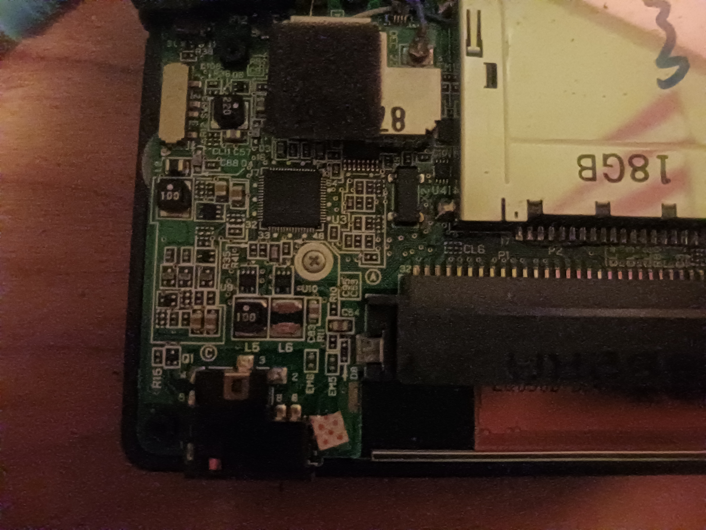

I recently got a Game Gear (model VA2) off of eBay that I wanted to recap. Here's what I did to get it working!



Sega Game Gear systems from the 1990s are notorious for using low-quality electrolytic capacitors that leak over time, causing issues ranging from dim screens and lack of audio to complete failure to power on. Replacing these caps with high-quality ceramic or new electrolytic ones resolves these issues completely.
Parts
I bought the parts from digiKey and am including some links below. These might be stale, but if they still work, you can use them. I went off of retrosix's amazing guide which I cannot more highly recommend, high quality website!
Power board- C13 - 820uF 35V
- C5 - 22uF 35V
- C11 - 100uF 35V
- C12, C1, C2, C3, C5 - 100uF 5V
- C68, C49, C47, C49, C1 - 100uF 5V
- C55, C54, - 1uF 5V
- C4, C45, C42, C15, C11 - 10uF 5V
Breakdown of lingo
I know that soldering is often filled with some really obscure lingo so let me break down a few things that confused me when I was researching. First uF means micro-Farad. Farads are how much of a capacitor a capacitor really is. What a capacitor does is store charge (like charging a battery). When you put a capacitor in a circuit, it will end up storing charge across it, building up voltage until it has enough charge that it can't be filled anymore. We use uF because the 'u' looks like the Greek letter mu which is a prefix for micro (1/1,000,000 a million and mu is pronounced m in greek, get it? m and million?)
Voltage levels are another thing that you need to understand. Basically, your capacitor will blow up (actually it won't, it will just not work, but we like saying blow up) if the voltage across it is higher than it is made for. The voltage used for every component is less than or equal to 5V except on the power board because the power board actually changes the voltage from a higher level to the 5V for the rest of the board.
Sizes are another thing which almost no guide even mentions. Basically there are two types of capacitors you can use
- SMD capacitors
- Through-hole capacitors
- 0402 - 4/1000 inches (4 mils) long by 2/1000 inches (2 mils) wide
- 1005 - 10/1000 inches (10 mils) long by 5/1000 inches (5 mils) wide